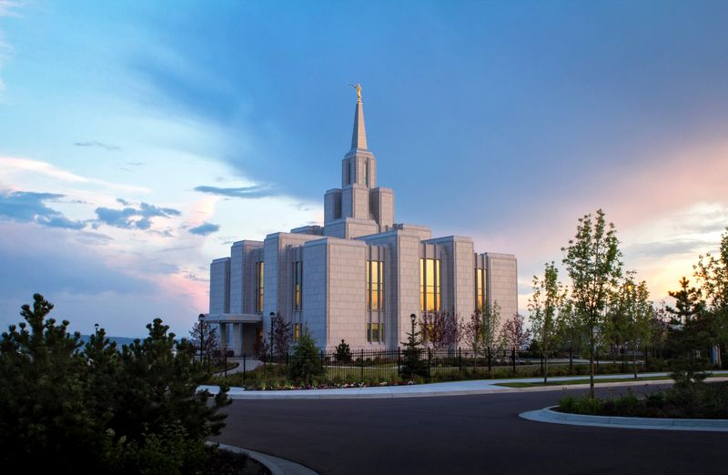
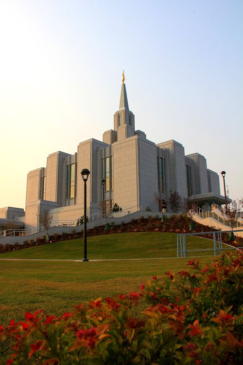
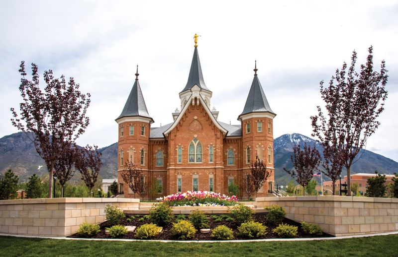
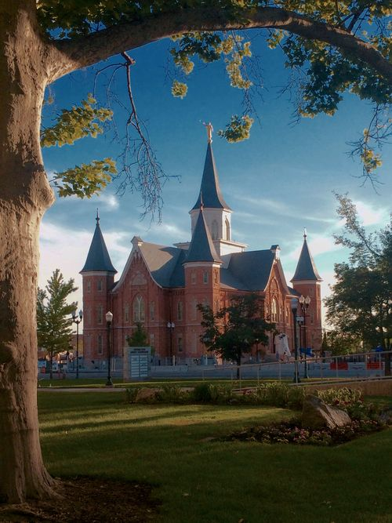
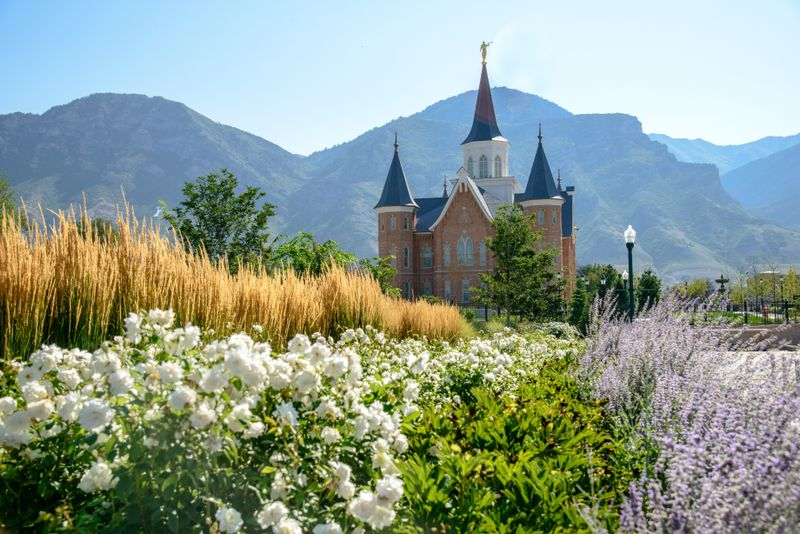
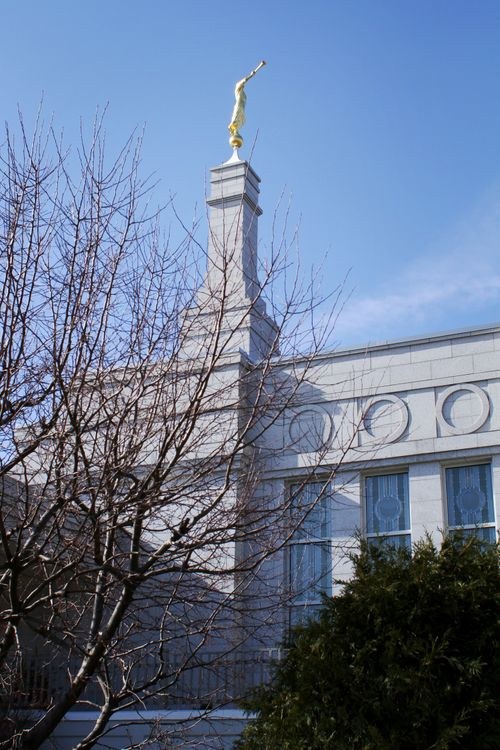
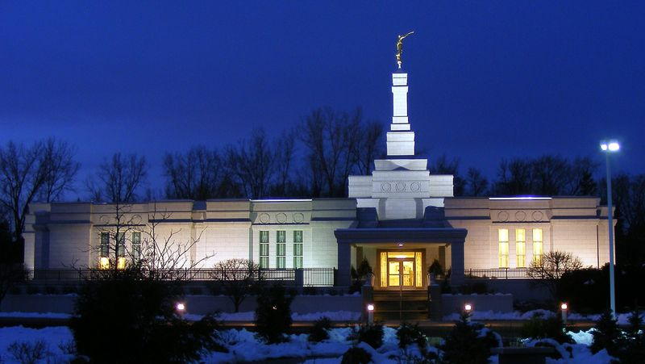

Calgary Canada Temple

Calgary Canada TempleCalgary Canada Temple

Provo City Center Temple

Provo City Center Temple

Provo City Center TempleSt. Paul Minneapolis Temple

St. Paul Minneapolis Temple

St. Paul Minneapolis Temple